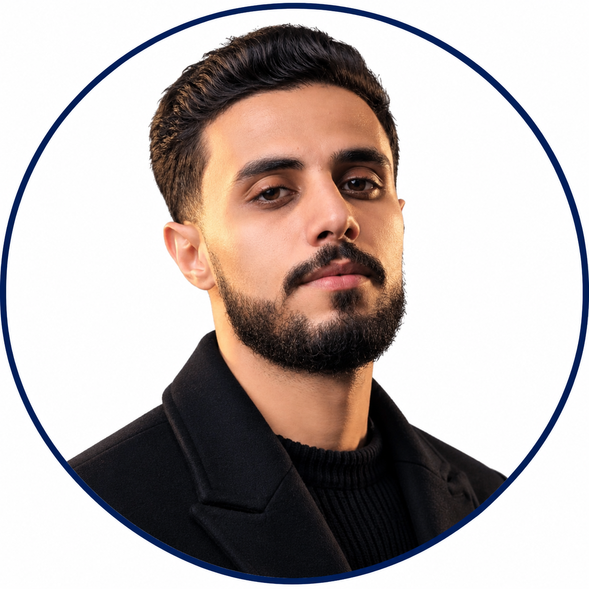

Développement web
Création d'interfaces web et intégration de fonctionnalités côté client et serveur.
Bonjour, je suis
Je conçois des expériences web utiles et des solutions numériques structurées. Curieux et polyvalent, j'aime transformer les idées en projets concrets.

Je suis un technicien supérieur tunisien en informatique de gestion, passionné par les technologies de l’information et l’analyse de données.
Mon parcours m'a permis de développer des compétences en développement d'applications, gestion de bases de données et outils informatiques. J'apprécie autant la réflexion derrière une solution que sa réalisation technique.
Je cherche à continuer d'apprendre, à collaborer avec des équipes motivées et à contribuer à des projets qui ont un impact concret.
Un ensemble de compétences techniques et pratiques pour concevoir, développer et maintenir des solutions informatiques.
Création d'interfaces web et intégration de fonctionnalités côté client et serveur.
Conception, organisation et interrogation de bases de données relationnelles.
Notions en programmation et développement d'applications desktop.
Organisation du travail, suivi de projets et utilisation des outils bureautiques.
Diagnostic de premier niveau, assistance utilisateur et notions réseaux/systèmes.
Je considère chaque nouveau défi comme une occasion d'apprendre et d'améliorer mes méthodes.
Parlons de votre projet ↗Mon parcours professionnel, mes études et les engagements qui ont enrichi mon expérience.
Coordination avec l'équipe de livraison et suivi des opérations quotidiennes.
Accueil des clients, création et mise à jour d'une base de données, préparation des fiches de réception.
Prise en charge des appels entrants et sortants et renseignement des clients sur les produits.
Gestion d'équipe et supervision de la production.
Génération de rapports financiers avec Sage et développement d'une application de gestion d'un parc automobile.
Assistance à la maintenance des équipements et logiciels et réalisation d'une application de gestion des réclamations.
Assistance à la maintenance des équipements informatiques, saisie et mise à jour de bases de données.
Quelques projets et domaines d'application qui illustrent mes intérêts en développement et en informatique de gestion.
Conception d'une plateforme de mise en relation entre candidats, entreprises et administrateur, avec gestion des offres et des candidatures.
PROJET ACADÉMIQUERéflexion autour d'une solution numérique dédiée au diagnostic automobile et aux services techniques pour le marché tunisien.
CONCEPT EN EXPLORATIONApplication de gestion autour des joueurs, clubs et statistiques, avec opérations CRUD et exploitation de données relationnelles.
PROJET DE DÉVELOPPEMENTLes visuels ci-dessus sont des illustrations de présentation. Les détails et le statut de chaque projet sont indiqués dans leur description.
Comprendre — clarifier le besoin et les objectifs.
Construire — choisir une solution simple et adaptée.
Améliorer — tester, apprendre et faire évoluer.
UN PROJET, UNE OPPORTUNITÉ ?
Je suis ouvert aux opportunités professionnelles, aux collaborations et aux échanges autour de projets numériques.